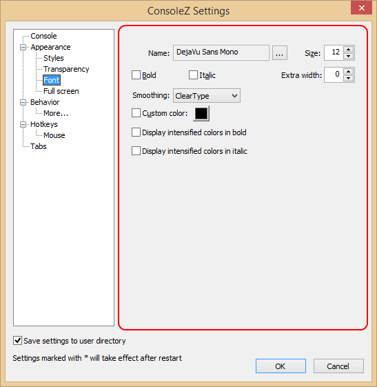
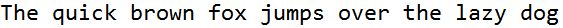
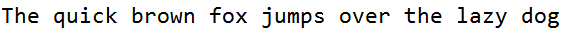
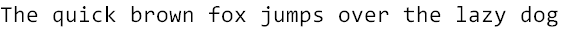

Here is a monospaced font with programming ligatures: Fira Code.
Fira Code (with ligatures):

Compare to Fira Mono (without ligatures):


Name
Specifies font name.
Size
Specifies font size.
Bold
If checked, font will be bold.
Italic
If checked, font will be italic.
Extra width
Specifies extra width, in pixels, added to the char width.
Smoothing
Specifies font smoothing.
Good documentation on font rendering can be found here.
| Default | Use the control panel settings. |
| None |
Full-Pixel Bi-Level Rendering. |
| ClearType |
Asymmetric Sub-Pixel Anti-Aliasing (“Compatible” Advance Widths).  |
| Natural ClearType |
Asymmetric Sub-Pixel Anti-Aliasing (“Natural” Advance Widths ).  |
| Antialiased |
Full-Pixel Anti-Aliasing.  |
Custom color
Allows you to specify custom font color.
Note: If on, all text will be shown in the selected color.
Shell's syntax coloring will be ignored.
Display intensified colors in bold
If Bold is unchecked: chars with intensified foregroung colors (0x8 to 0xF) are displayed using bold font.
If Bold is checked: chars with intensified foregroung colors (0x8 to 0xF) are displayed using non bold font.
Display intensified colors in italic
If Italic is unchecked: chars with intensified foregroung colors (0x8 to 0xF) are displayed using italic font.
If Italic is checked: chars with intensified foregroung colors (0x8 to 0xF) are displayed using non italic font.
Enable typographic ligature
If checked, text rendering will use typographic ligatures defined in the selected font.
Here is a monospaced font with programming ligatures: Fira Code.
Fira Code (with ligatures):
Compare to Fira Mono (without ligatures):